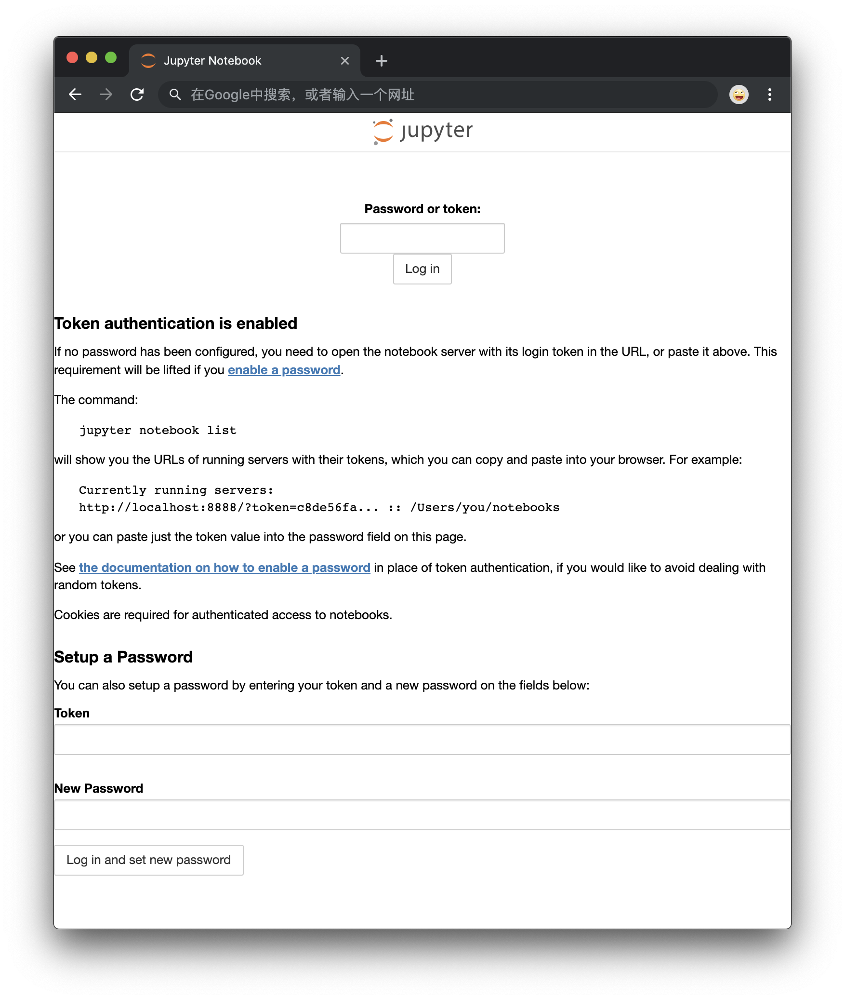

Setup Jupyter in Docker
获取 Jupyter 镜像并启动
如果在 Docker Hub 中搜索 jupyter 会有很多官方镜像，我们从中选一个名为 jupyter/minimal-notebook 的镜像来构建容器
创建容器的命令如下：
1 | docker run -d -p ${host_exposed_port}:8888 --name=${container_name} -v ${host_volumn}:/home/jovyan jupyter/minimal-notebook |
简单说下启动命令里面的几个参数
host_exposed_port- 可选
需要暴露的宿主机端口，供其它机器访问本 Jupyter notebook
不需要的话就去掉-p ${host_exposed_port}:8888这个参数container_name- 可选
容器名，方便在容器列表中查看/查找本容器
不需要的话就去掉--name=${container_name}这个参数host_volumn- 可选
将宿主机的目录挂载到容器中的/home/jovyan目录，这样在容器里面创建文件就等于在${host_volumn}创建，方便对 Notebook 的内容进行导入导出。这里要注意
${host_volumn}的权限问题，需要保证容器启动用户有该目录的读写权限，不然创建容器的时候会失败，启动之后使用docker ps查看正在运行的容器会找不到刚创建的容器。
使用docker ps -a找到容器 ID 后再使用docker logs ${CONTAINER-ID}查看容器的 Log 可以看到错误信息PermissionError: [Errno 13] Permission denied: '/home/jovyan/.local'，原因就是容器启动用户没有该目录的读写权限，解决办法就是给容器启动用户加上该目录的读写权限。添加权限的方法有很多，这里简单介绍一个1
cd ${host_volumn} && chmod o+rw .
不需要的话就去掉
-v ${host_volumn}:/home/jovyan这个参数，强烈建议配置这个参数方便 notebook 数据的导入导出
登录 Jupyter Notebook
安装好之后就可以通过 http://${host_name}:${host_exposed_port} 来访问 Jupyter Notebook 了，第一次访问需要提供 Login Token，Token 会在 Notebook 启动的时候输出到控制台，查看容器的日志即可找到 (docker logs ${CONTAINER-ID})。正常可以看到这样的页面：

通过 Token 登录很不方便，如果下次换了个设备登录又要重新输入 Token，所以我们需要自己设个容易记忆的密码；如果你有一个可以记住 48 位 Token 的最强大脑的话就可以不用往下看了。像我这种凡夫俗子还是规规矩矩用密码吧
一些额外的需求
如果要在容器中安装一些自己需要的软件包怎么办？
Start minimal-notebook with sudo access
Add the param when start container:
1 | -e GRANT_SUDO=yes --user root |